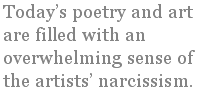

Sometimes it’s good to clear out the closets, to reconsider old ways. At first glance, this past century seems to have been such a time. New ideas such as modernism arose, which had never before been considered in the mainstream of art. Today, less than one hundred years after modernism set out to “free” the arts, even the most the basic elements of learning to write or paint are viewed as largely suspect or even beyond the pale.
The results of this are depressing, even bizarre. I mean the fragmented poems, the attendant solipsistic criticism, the self-congratulatory apotheosis of the minuscule in every literary journal and museum. Today’s poetry and art are filled with an overwhelming sense of the artists’ narcissism. Clear words and lines that follow to a conclusion are most often rejected. Art galleries feature tantrums of disintegration and decaying matter. Potentially good ideas are often buried under layers of just plain silliness.
Whenever something inexplicable and contradictory occurs, the mantra “Change is Good!” is cheerfully repeated. We all feel a little bit better then, just because change is good. No one bothers to ask what change, and to what end? We live in an age of excessive communication about very little. Many people can barely formulate a coherent sentence. Unbelievably, what was once covered in seventh grade textbooks of the early 1900s is now the subject of graduate school study.
Change has certainly occurred, but it is analogous to the change that occurs in a week-old corpse. Modernism has scrambled the meanings of common terms, forms and boundaries, shackling the arts to the whims of passing fads. Standards are scorned, and yet rules continue to increase exponentially, becoming increasingly entangled. Rules proliferate much like the magnolia tree in my front yard which, immediately after pruning, grows to twice its original size.
Dissent has disappeared; and art has turned inward. One’s fragile inner child is now the sole approved subject. Few poets and painters care to consider that there might be any other way of approaching art. What an advancement — a vast field of potential ideas narrowed to a single uneven path of “self-expression.”
Oddly, when cultural and aesthetic norms were still largely conservative, artists regularly got heated up over issues, comparisons, principles. Ideas of every kind flew back and forth in spite of strong opposition. Now when we have been freed to function under supposedly “liberal” norms, it seems there is a rule for everything we do. Many actually believe it is in bad taste to reason, to compare, to criticize. Conceptual absurdities are an entrenched part of our artistic vocabulary, but we must never be discriminating (one of our generation’s new dirty words). We live in mental straitjackets; we are so polite that we are afraid to object to anything, anywhere, at any time
Unspoken rules are always insidious. Current modernism is packed full of unspoken edicts and assumptions planted in the cement of higher education. Second-rate careerists who are willing to go along hold all the cards, teach and encourage a murky self-absorbed poetry and foster an ugly, multi-media, politicized art. It is to their advantage to discourage legitimate intellectual investigation and genuine dissent.
Any painting or poem is a delicate and deliberate construction of visual or verbal elements designed to bring the message home. Those who cannot see this must write and paint locked in a dream world of sloppy syntax, nightmarish fragments, and half-realized feelings. Sadly, this is a fair description of the arts today.
It is one thing to be fired up by an infinite range of inspiration, yet another to assume that momentary inspiration is the primary source of the meaning of your work. Allen Ginsberg’s “First thought best thought”, that incomplete and ultimately specious poetic, is only one of the pillars on which current poetry is structured. Schools such as The Black Mountain, San Francisco, the “Beats” and the New York School completed the descent of our poetry into a surrealistic and politicized hash of incoherence. It is these ill-considered movements of stupidity that have occurred over the last forty years which are ultimately responsible for our current addiction to bad poetry.
Though fuzzy thinking and political correctness in art has become a near epidemic, one can always find isolated instances where the poet or painter has avoided infection and gone on to produce something worth hearing or seeing. Some contemporary poets who have done so are T. S. Kerrigan, Margaret Menamin, Joseph S. Salemi, Harvey Stanbrough, Gail White, and Leo Yankevich, to name a few.
The visual arts are also caught up in the randomness and politicalization of art. Most rush to follow Found Art, Minimalism, Conceptualism, and all sorts of other miniscule deviations based on the trivial, accidental and automatic, like sheep going over a precipice. The audience for this stuff has been well trained to bring its own meaning to a painting or in the case of “digital art” created by computer, to accept the range of choices offered by a machine as signs of genuine human creativity. “Awe-inspiring” orange plastic used to “wrap up” the landscape, religious icons encased in dung and other human waste, out and out canned crap bought and sold as art, vaseline- coated museum interiors and all the dismal range of such foolishness have been the result. Even Gerhard Richter, realism’s new hope, copies photographs and makes a painting, then wipes it over, presumably improving it, with a squeegie. Such a cute trick!
Further examples are unnecessary; this stuff is everywhere. We’ve all seen it and walked away, shaking our heads. All this glorification of non-art and half thought is nothing but a giant hoax perpetrated on bored, badly educated affluent audiences as a way to assuage their tons of unfocused guilt.
There’s an unfortunate side effect to all of this. While I respect and admire many artists and poets, living and dead, I bristle when I find the mediocre ones more and more often elevated to positions of authority and honor. I’m apt to lose sleep over self-satisfied critics who proclaim trivial and negative works to be masterpieces. The end result is that I gradually cease to read and view much new art. As I understand it, other artists in many fields are experiencing this disgust as well.
It is our addiction to consensus and timidity, our obsession with triviality that bears the bigger blame, keeping us from honest inquiry and direct speech. But it is the lack of content and point of view in these non-works that is especially exasperating. Where are the sharp-tongued satirists of yesteryear? Are humor and delight deceased, or only temporarily ensconced in assisted living facilities? Wherever they are, it’s certain they are not in any good state of health.
It would be wise of us to stop giving bugs and buffaloes our top priority — it is the arts that are the endangered species. Though the arts appear to be disintegrating, a colorful gem of a painting may occasionally be seen from the corner of one’s eye. From time to time the clear note of a meaningful well-written poem gives hope. The arts may be on the critical list, but they’re not universally dead.
We owe it to ourselves to stand back and question whether there is still time to resuscitate those qualities that produced the great poetry and paintings of the past. And it’s also time to throw the chamberpot of modernism and its contents out the window.